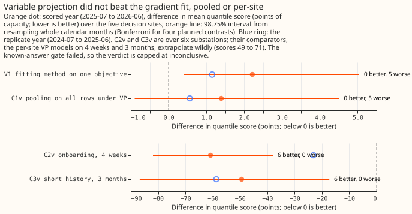
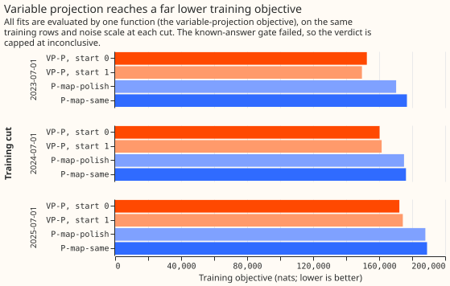
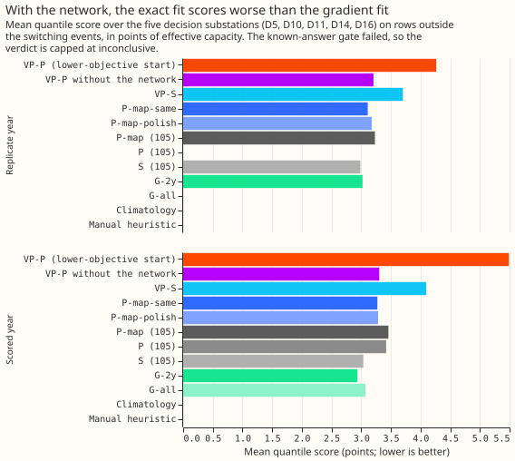
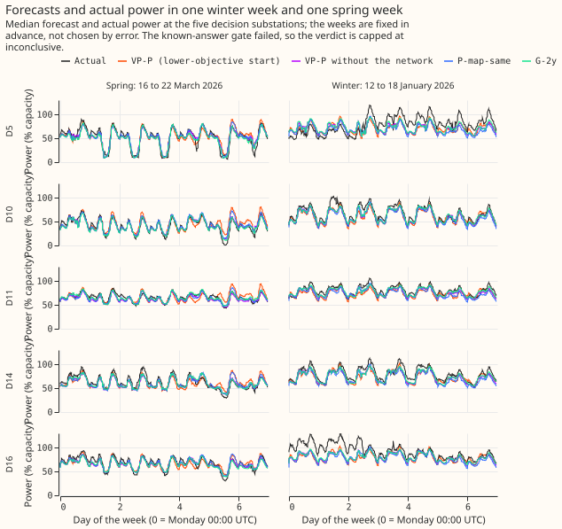
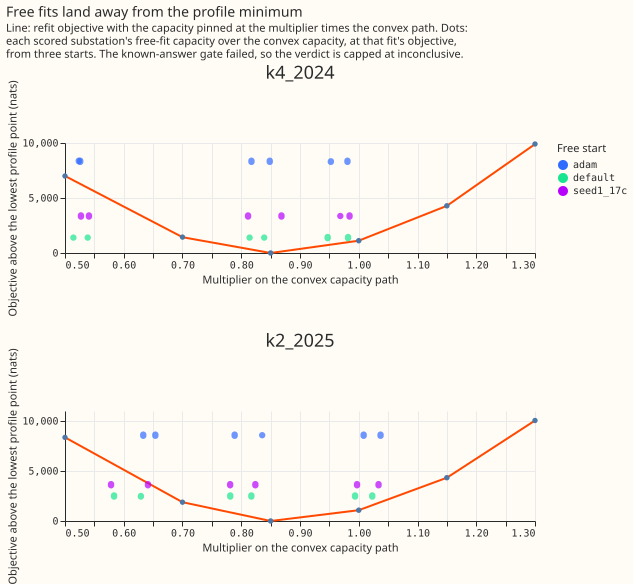
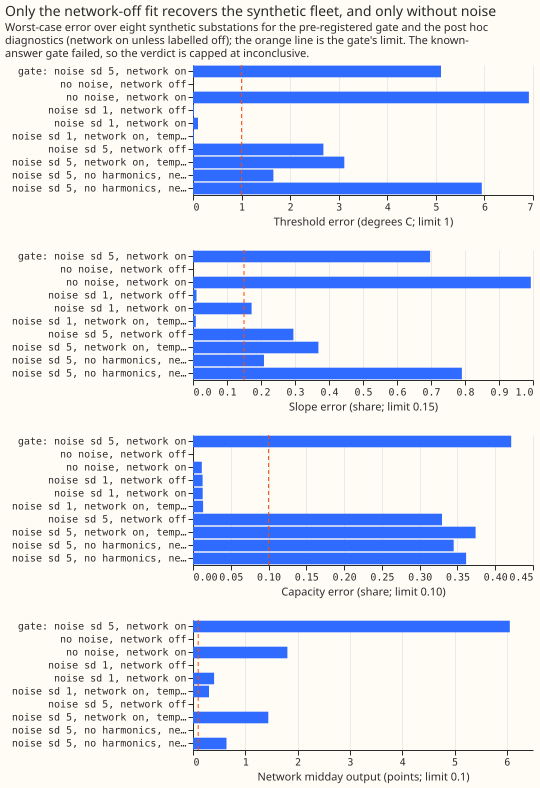

Differentiable physics, VP: fitting the pooled model's linear coefficients exactly
Fitting the pooled demand model's linear coefficients exactly did not improve its forecasts, so
the optimiser is not what made the pooled model lose to a per-substation model. The pooled model
is one differentiable-physics demand model fitted to many Primary substations at once. Variable
projection (VP) is a fitting method that solves the coefficients entering the forecast linearly
exactly at each step and moves the other parameters by gradient steps. VP reached a training
objective (the negative log-likelihood of the training rows, in nats) 16,000 to 27,000 nats lower
than the gradient fit of the same objective, which uses the Adam optimiser. The decision substations
are the five Primary substations that carry the experiment's planned contrasts. The quantile score
is twice the mean pinball loss over 11 quantiles, in points (percent) of effective capacity. With
the interaction neural network on, the scored year's quantile score, averaged over the five decision
substations, was 5.49 for VP against 3.27 for the gradient fit. The excess comes from four days:
on 28 and 29 March 2026 (the weekend of the spring clock change), Good Friday (3 April), and Easter
Monday (6 April), VP forecast 20 to 280 points too high (75 to 280 on three of them), because the
exact solve had made the network's last layer and the seasonal and holiday coefficients very large.
Without those four days (a post hoc check) VP is still 0.70 points worse than the gradient fit, at
all five substations. With the network off, VP is stable and within 0.03 points of the gradient fit.
The known-answer test failed on its pre-registered definition, so the verdict cannot exceed
inconclusive.
We asked whether the pooled model lost to a per-substation model in experiment 105 because gradient descent stopped short of the optimum. We fitted the pooled model, and a model per substation, by VP at three training cuts, scored 2025-07-01 to 2026-06-30 with 2024-07-01 to 2025-06-30 as a replicate year, and compared with the gradient fit on one objective. The objective is under-regularised: its penalties on the network's last layer and on the calendar terms only make the solution unique, so the exact solve finds large weights that cancel on the training rows and diverge on rare inputs. The gradient fit's early stop had been acting as the regulariser. Exact optimisation is not the bottleneck for a simple model (L1 below), and the pooled model with its network cannot recover heating even from noise-free data.
Figure 1. The VP fits are no better than the gradient fits, and the onboarding contrasts compare against per-substation VP fits that score 71 and 48 points. Dot plot of the four planned contrasts with 98.75% intervals; the first two are positive (worse) at all five substations.

Figure 2. VP reaches a far lower objective than the gradient fit (P-map-same), and its two starts differ by up to 3,000 nats.

Figure 3. With the network on, the exact fit scores worst; with it off, the fit matches the gradient fit, and no pooled fit beats the per-substation convex model.

Figure 4. In one winter week and one spring week, the median forecasts of VP-P differ visibly from the others at some substations. The weeks were fixed in advance, not chosen by error, and both end before the four blow-up days; the days table in Results lists those.

Figure 5. The free fits sit 1,400 to 8,600 nats above the lowest capacity-profile point.

Figure 6. Only the network-off fit recovers a synthetic fleet, and only without noise. The network-on fit fails even on noise-free data.

Definitions
| Name | What is fitted |
|---|---|
| VP-P | the pooled model (K = 2 shared daily shapes, interaction network of two hidden layers of 64 units, fitted capacity), maximum a posteriori (MAP), fitted by VP |
| VP-S | the same model, one MW substation at a time, fitted by VP |
| P-map-same | experiment 105's Adam fit (steps and schedule) on VP's objective |
| P-map-polish | P-map-same's non-linear parameters with the linear coefficients solved exactly |
| VP-P-nonet | VP-P without the interaction network (exploratory arm in the plan) |
| G-2y, G-all | Part 2's convex per-substation model on the 2-year window, and on all years |
| L1 | the equivalence configuration (see the ladder bullet) fitted by VP |
| V1, C1v, C2v, C3v | planned contrasts 1 to 4 under VP: fitting method, pooling, onboarding, short history |
Results
- Arms and references. The arm VP-P is the lower-objective start of two (start 0: seed 0; start 1:
seed 1 with every heating threshold at 17 degrees), which is start 0 at the 2024-07-01 and
2025-07-01 cuts and start 1 at 2023-07-01. References: experiment 105's P, P-map, S, and
equivalence arm (
s_equiv_all); climatology; the manual heuristic. Row set, window, pool, and masks are as in experiment 105. - Fitting schedule. Every VP fit used 600 Adam warm-start steps, L-BFGS for up to 300 evaluations, and an Adam fallback of 1,200 steps (VP-P) or 400 (other arms) when L-BFGS missed its convergence test. Start 0 of VP-P was optimised in two rounds (the second at the second round's noise scale, with 300 more L-BFGS evaluations and 400 more Adam steps), so it received about twice the optimisation of start 1. Four VP-P-nonet fits (both starts at the 2023-07-01 and 2024-07-01 cuts) met the convergence test; no other fit did.
- Scores (five decision sites, scored year; replicate year in brackets). VP-P 5.49 (4.26); VP-P start 1 3.89 (3.64); VP-P-nonet 3.30 (3.21); VP-S 4.09 (3.70); P-map-same 3.27 (3.11); P-map-polish 3.29 (3.18); experiment 105's P 3.42, P-map 3.46, S 3.04; G-2y 2.94 (3.02); G-all 3.07; climatology 4.07; manual heuristic 3.49.
- V1 (planned): VP-P minus P-map-same is +2.215 points (98.75% interval +0.398 to +5.041), better at 0 of 5 substations; replicate year +1.154 (+0.527 to +1.849), 0 of 5 better.
- The exact fit's objective is 16,000 to 27,000 nats lower at every cut. VP-P minus P-map-same is -16,747 nats at the 2025-07-01 cut (172,257 against 189,005), -16,014 at 2024-07-01, and -27,257 at 2023-07-01. Experiment 105's own P-map is 239,053 on this objective (it was fitted on a different objective, so this is a reference only).
- Four days carry the headline (post hoc). The first two, 28 and 29 March 2026, are the Saturday and the Sunday of the spring clock change (a 23-hour local day); the other two are Good Friday and Easter Monday. A separate check of the clock-change handling in the differentiable-physics features and the ensemble weather join is under way; this page claims no bug in either. A per-day check of the mean median forecast error over the five decision sites finds the days below (a day is listed when any listed arm is over 30 points off), plus Good Friday (3 April), which the numbers audit flagged although its VP-P error is smaller. VP-P is also 47 points too high on 5 and 6 January; those two days are in the table but outside the four-day exclusion below, so the "without" numbers still contain them.
| Day (2026) | VP-P | VP-P start 1 | VP-onb4w | VP-P-nonet | P-map-same | G-2y |
|---|---|---|---|---|---|---|
| 5 January | +47.1 | -18.4 | -5.0 | -3.6 | +0.4 | -7.8 |
| 6 January | +47.9 | -16.8 | -5.1 | -5.3 | -2.2 | -9.5 |
| 28 March | +75.2 | +9.4 | +91.8 | -1.6 | +3.3 | -2.5 |
| 29 March | +199.2 | +12.3 | +70.8 | -5.2 | -2.9 | -6.4 |
| 3 April | +19.5 | 0.0 | +5.3 | -1.4 | -1.6 | -3.5 |
| 6 April | +278.2 | +8.6 | +17.6 | +1.9 | +3.3 | +0.3 |
- Without the four days (28 and 29 March, 3 and 6 April; post hoc). V1 falls to +0.696 (+0.317 to +1.264), still 0 of 5 better; C1v falls from +1.394 to -0.132 (-1.107 to +0.896); the VP-P five-site score falls from 5.49 to 3.97 (P-map-same 3.28); and the spread between the two VP-P starts falls from 1.599 to 0.104 points. In the replicate year the only day over 30 points is 27 December 2024 (VP-P-nonet +42.1, VP-P +29.0); without it V1 is +1.089 (+0.504 to +1.773) and the start spread is 0.636, so start dependence remains in the replicate year.
- Mechanism: the exact solve found very large weights (saved models, 2025-07-01 cut). The
network's last layer has an L2 norm of 270 in VP-P start 0 and 197 in start 1, against 7.6 for
P-map-same. The largest harmonic coefficient is 37 (start 0) against 2.0, and the largest holiday
coefficient is 54 against 6.9. The penalties are
NETWORK_DECAY(1e-5) andCALENDAR_RIDGE(1e-6), sized only to make the solution unique. The same mechanism explains the per-substation fits on 4 weeks and 3 months below. That the large weights cause the four blow-up days is a hypothesis consistent with these numbers, not a tested result. - Solving the linear coefficients exactly after the gradient fit changes the score by only +0.013 (-0.001 to +0.025; P-map-polish minus P-map-same), while lowering the objective by 1,005 nats, so the linear coefficients do not limit skill.
- C1v (planned): VP-P minus VP-S is +1.394 (-0.896 to +4.508), 0 of 5 better; replicate year +0.561 (-0.095 to +1.289). Non-inferiority (upper end at most +0.10) fails.
- VP-S minus S is +1.059 points (95% interval +0.579 to +1.734), better at 1 of 5 substations; replicate year +0.716, 0 of 5 better. VP-S minus G-2y is +1.158 (+0.648 to +1.829). The per-substation VP model keeps the network, so exact optimisation made the per-substation model worse too.
- VP-P-nonet (exploratory arm in the plan). VP-P-nonet minus P-map-same is +0.031 points (95% interval -0.174 to +0.192), so the network-off exact fit is within noise of the gradient fit with the network on. That comparison changes the network and the optimiser together. VP-P-nonet minus VP-P is -2.183 (-4.257 to -0.412), better at 5 of 5. The two VP-P-nonet starts differ by 0.004 points.
- C2v and C3v (planned) compare against broken comparators. On the five decision sites, VP-onb4w minus VP-S-4w is -64.951 (-87.248 to -40.993) and VP-short3m minus VP-S-3m is -44.105 (-75.674 to -16.684), 5 of 5 better each (on all six scored sites: -60.8 and -49.4). The per-site VP fits on 4 weeks and 3 months score 70.6 and 48.4, because the exact solve fits the lightly penalised seasonal terms to a short window and extrapolates them. Against experiment 105's gradient arms, VP-onb4w minus P-onb4w is +1.460 (+0.439 to +2.522; VP-onb4w shares VP-P's network and blows up on 28 and 29 March too) and VP-short3m minus P-short3m is -0.122 (-0.554 to +0.182).
- Ladder (L1, exploratory). L1 is experiment 105's equivalence configuration (one substation at
a time, no network, no shared shapes, capacity pinned to the convex path, all years), fitted by
VP from five threshold starts (12 to 20 degrees in steps of 2). It scores 2.877, against
s_equiv_all's 3.326 (-0.449, -0.537 to -0.373, 5 of 5 better) and G-all's 3.072 (-0.195, -0.298 to -0.075). That lead over G-all depends on D16, whose replica fit was singular (so its spread is borrowed from other substations): without D16, L1 minus G-all is -0.116 (-0.277 to +0.072), so L1 matches G-all rather than beating it. The contrast L1 minuss_equiv_allcombines the optimiser with a changed objective (natural-scale slope prior, fixed noise scale) and a threshold search; the share of the 0.25-point gap that comes from the heating form cannot be separated from them. L2, the plan's heating-basis step, was dropped. At D9 and D16 the replica fit was numerically singular; the cause at D16, a long-history substation, was not investigated. The objectives of the five threshold starts were not stored, so this page does not claim they agree. - Capacity profile (labelled). Criterion 1, capacities agree across the three starts within 3 points at every substation, passes at both configurations (largest spread 1.6 points for K = 2 and 1.3 for K = 4). Criterion 2, each free objective within 1 nat per 10,000 rows of the lowest profile point, fails: the free fits are 1,400 to 8,600 nats above it (tolerance 31 to 34 nats). Criterion 3, each free capacity where the profile is within that tolerance of its minimum, fails: the minimum is at 0.85 times the convex capacity path and the free capacities lie between 0.5 and 1.05 times it. The three starts reach objectives up to 7,000 nats apart, and none converged, so the interaction network's loss surface has many local optima. The pinned fits did not converge either.
- Gate, test 2 (synthetic fleet at the pre-registered noise, sd 5.0 points; failed). Worst-case errors over eight synthetic substations and three starts:
| Quantity | Worst-case error | Limit |
|---|---|---|
| Heating threshold | 5.1 to 5.7 degrees | 1 |
| Heating slope | 70 to 76% | 15% |
| Season-year capacity | 39 to 44% | 10% |
| Growth increment | 2.0 to 2.5 points | 1.5 |
| Network summer-midday output | 2.1 to 6.1 points | 0.1 |
- Gate, tests 3 and 4 (failed). Test 3: no start converged, and the objectives spread by 32 nats per 10,000 rows (limit 1). Test 4: the recovered capacity over the injected capacity was 0.77 to 0.90 (median 0.82; limit 0.9 to 1.1; experiment 105 had 0.78); other substations' capacities moved 1.1 to 4.8% (limit 5%).
- Gate diagnostics (post hoc). Continuing the fit for 1,500 more evaluations lowers the objective by 4,200 nats and leaves the errors unchanged, so the failure is not under-training. Without noise the network-off fit recovers the fleet exactly (all errors 0.000), so the module is correct, but the network-on fit does not: its threshold is 6.9 degrees off, its slope 99% off, and the network adds 1.8 points in summer, because the network absorbs the heating term. The pre-registered gate has the network on and a truth without a network, so it could not pass by design. At noise sd 1.0 the network-off fit recovers thresholds to 0.02 degrees, slopes to 1%, and capacities to 1.3%; the network-on fit has slopes 17% off and a network output of 0.40 points; hiding temperature from the network by day fixes the slope (0.8%) but not the output (0.30). At the pre-registered noise every variant fails: network off 2.7 degrees, 30%, and 33%; temperature hidden by day 3.1 degrees, 37%, and 37%. The sd-1 runs use Gaussian noise and the sd-5 gate uses week blocks of another substation's convex residuals, so the step from sd 1 to sd 5 changes the noise structure as well as its size.
- The harmonics hypothesis is not confirmed. Generating and fitting the fleet without the day-of-year harmonics improves the network-off thresholds and slopes (1.7 degrees and 21%) but not the capacities (34%), and worsens the network-on fit (5.9 degrees and 79%).
- Hypothesis, not a result: the seasonal terms absorb the seasonal cycle. The harmonics, the per-band profile, and the calendar terms may absorb most of the seasonal cycle of temperature and sun. Only day-to-day weather anomalies would then identify the slope, threshold, and capacity, which makes the effective sample far smaller than the row count. Identification should then improve with more years of history.
- Tails (five sites). Coverage is the share of actuals at or below each quantile. The worst 1% of rows carry 32% of VP-P's score; those are the four blow-up days.
| Arm | Coverage q01 | q05 | q95 | q99 | Pinball q01 | q05 | q95 | q99 |
|---|---|---|---|---|---|---|---|---|
| VP-P | 0.023 | 0.052 | 0.910 | 0.983 | 1.929 | 2.548 | 1.057 | 0.272 |
| VP-P-nonet | 0.016 | 0.047 | 0.829 | 0.922 | 0.277 | 0.735 | 0.996 | 0.352 |
| P-map-same | 0.015 | 0.043 | 0.834 | 0.920 | 0.198 | 0.731 | 0.987 | 0.365 |
| G-2y | 0.015 | 0.043 | 0.846 | 0.940 | 0.186 | 0.666 | 0.851 | 0.282 |
- Descriptive: D18, a young substation. In the scored year VP-P scores 5.86 and P-map-same 4.19, but VP-S scores 24.4 and G-2y 12.1. In the replicate year VP-P scores 180.5 against 13.6 for P-map-same.
Checks
- Median minus mean forecast per site (scored year, points). VP-P: D10 -1.11, D11 0.58, D14 0.27, D16 0.43, D5 0.01, D9 -0.27, D18 0.93. VP-P-nonet: D10 -1.80, D11 0.94, D14 0.21, D16 0.20, D5 0.32. P-map-same: D10 -1.72, D11 0.73. D10's gap of about -1 to -1.8 points appears in every arm, including S (-1.74), so it is not a VP effect.
- Error of the mean forecast beside each contrast. V1 +2.676 (+0.847 to +4.840); C1v +1.460 (-0.665 to +3.950); C2v -69.7 and C3v -47.6 (five decision sites, as the contrasts above). The quantile-score and mean-error contrasts agree in sign.
- Leave one site out. V1 stays +2.1 to +2.3 with any site dropped (0 of 4 better); C1v stays +1.2 to +1.7. Dropping D10's unlabelled jump (2025-11-17 to 2025-12-14), the winter or the summer half, or masked rows changes no sign.
- Control. G-all scores 3.072 at the five sites, as in Part 2. P-map-polish is never above P-map-same on the VP objective, at all three cuts.
- The plan stopped scoring after a failed gate; the experiment manager ruled to score anyway.
The pre-registered gate stays as written and failed. The VP-P and P-map-same fits were scored and
labelled "gate failed", and the verdict is capped at
inconclusive. - Handoff. C1v's interval does not lie wholly above +0.10, so by the plan the pooled neural
model continues and a later experiment compares VP-P against the per-substation model. The fitter
option
fitter="vp"stays off by default. The advice to compare fitting methods with the network off departs from that handoff and is advice only. It departs because, with the network on, the exact fit could not recover heating even from noise-free data, and the network-off fit matched the gradient fit. - Audit triggers that fired, and their triage. Trigger 1 (a control failed): the gate failed. Trigger 2 (the result contradicts its prediction): V1 is positive where -0.15 to -0.45 was predicted. Trigger 5 (a nested model beats the larger one): VP-P-nonet beats VP-P by 2.183. Trigger 6 (an interval far wider than a comparable one): V1's interval is 4.64 points wide, nine times Part 3's C1 on the same rows. Trigger 7 (the result decides the pooled route). A numbers audit by a fresh Opus reviewer traced triggers 2, 5, and 6 to the four blow-up days; its other findings are in this page.
Predictions
- Held: the VP-P objective is over 2,000 nats below P-map-same (it is 16,747 below); criterion 1 of the capacity profile; P-map-polish does not exceed P-map-same; VP-P's coverage at q01, q05, and q99 is inside the predicted bands; peak GPU memory under 1 GB.
- Failed: the predicted VP-P minus P-map-same difference of -0.15 to -0.45 points at all five
substations (the result is +2.215, at none); C1v within +/-0.10 (+1.394); dropping D16 moves C1v
by under 0.10 (it moves to +1.216); a start spread under 0.05 (1.599); VP-S minus S of -0.05 to
-0.30 (+1.059); onboarding and short-history differences of -0.5 to -2.0 and -0.2 to -1.0 (-64.951
and -44.105, from broken comparators); the capacity profile passing (criteria 2 and 3 fail);
VP-P's q95 coverage (0.910, 4 points below nominal; limit 3); every VP fit under 10 minutes of GPU
time before its fallback (the longest,
vp_p_s1at 2023-07-01, took 664 s including the fallback). - Not evaluated: that VP-P's capacities lie within 15% of G-2y's at 4 of 5 substations. As a proxy, the capacity-profile free fits imply multipliers on the G-all capacity path of 0.99 (D5), 0.78 (D10), 0.58 (D11), 0.82 (D14), and 1.02 (D16), which is 2 of 5 within 15%; those fits are not VP-P itself. The ladder prediction (L1 against G-all by the 0.25-point gap) is also not evaluated cleanly, because L1 changes the objective.
- Not built: VP-P-pin, the equivalence ladder's L2, batching of copies, the ladder, threshold profile, and tails figures, and the substation cards. The series rule asks for cards that let the maintainer check each fit is sane. The fit's weights are blown up (last-layer norm 270, largest harmonic coefficient 37, largest holiday coefficient 54), so a card would show unreliable values, and the manager waived the cards for this page once. Cards for the repaired fit are owed. A card, when built, will carry the line "weakly identified at real noise levels (experiment 112); compare across substations with care".
- Figure 4 shows VP-P-nonet and G-2y in place of the plan's VP-S.
Caveats
- No VP-P or VP-S fit met its convergence test, so the comparison is between fits that are lower in objective but not at the optimum.
- The pooled VP result depends on the penalties on the network's last layer and the calendar terms; a stronger penalty was not tried.
- The four blow-up days were found after the run, so every number "without" them is post hoc.
- ERA5 and CAMS flatter the solar term; the hand-filtered masks are hindsight labels; the MVA
tan(phi)andq0are zero in VP, unlike P-map's; the replicate year is in sample for K and the deviation scale; fits are maximum a posteriori only. - The gate used the plan's noise (residuals of the per-substation convex model, sd 5.0 points). A parameter-recovery gate should test calibrated intervals (an 80% interval covering the truth 70 to 90% of the time over at least 20 synthetic substations, with the interval widths reported), not point tolerances.
- The per-site VP fits on 4 weeks and 3 months are broken comparators (see C2v and C3v); the leave-one-out and short-history VP refits start cold and use L-BFGS only. The fits at the 2023-07-01 and 2024-07-01 training cuts exist only to give the spread of the later cut.
- GPU time used: 5.77 of the 10 hours cap, tallied by
e00112_budget.py(it includes about 0.26 hours of gate diagnostics; the L1 fits are not recorded).
What the next experiment could answer
Two questions are open, and the maintainer chooses between them. Does the exact fit work once the network's last layer and the calendar terms are penalised enough? A rerun of VP-P with stronger penalties would show whether the four blow-up days disappear. Does the pooled demand model need its interaction network at all? The network-off model is the candidate to compare with the per-substation convex model, on more years of history, where identification should improve with more weather anomalies.